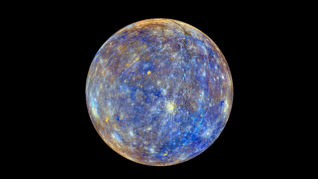
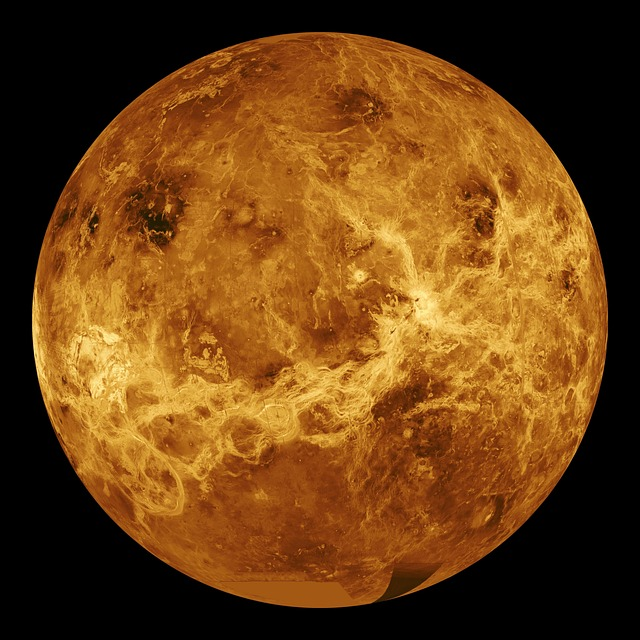
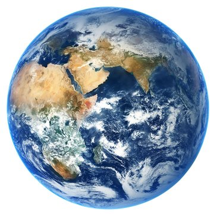
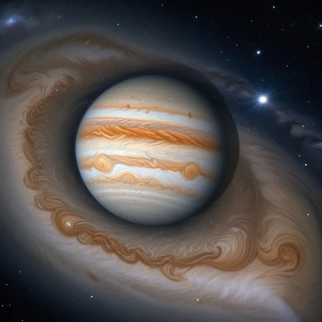
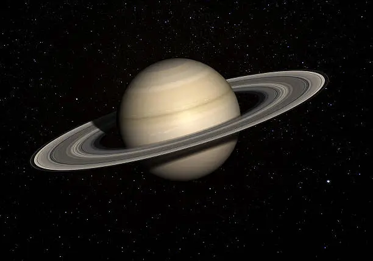
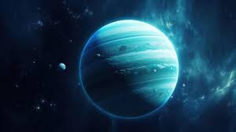
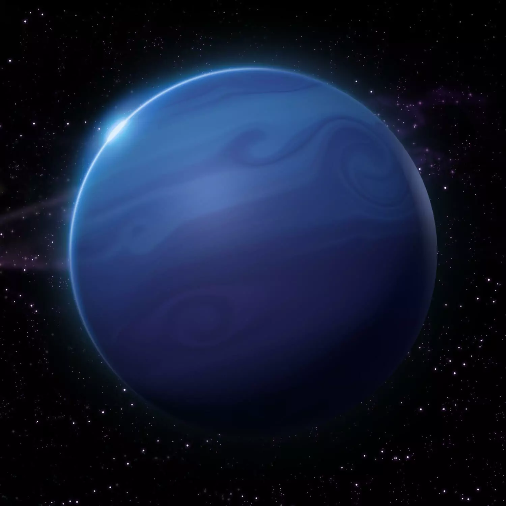

Planets of Our Solar System
-
1. Mercury

The smallest planet in our solar system.
-
2. Venus

Often called Earth's twin.
-
3. Earth

Blue Planet .
Our Home .
-
4. Mars

Red Planet .
-
5. jupiter

Jupiter is the largest planet in our solar system
-
6. Saturn

Ringed Planet.
-
7. Uranus

Uranus rotates at a nearly 90-degree angle from the plane of its orbit.
-
8. Neptune

Neptune is the only planet in our solar system not visible to the naked eye.